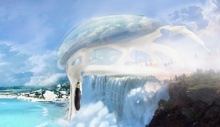
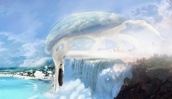

|
 

La faculté de Belez est inspirée d'une structure organique, faisant parralèle à l'environnement marin. C'est une symbiose avec son environnement, alliant respect de la nature et technologie scientifique.
Sa carapace vitrée rapelle le dos des baleines. Sa colonne de soutien fait le lien entre sa structure et l'océan. Entre ses deux piliers, un fleuve se jette dans l'océan créant une superbe cascade.
L'intétérieur de la structure est composé d'un immense complexe de bâtiments constituant le cœur de la faculté.
|
|